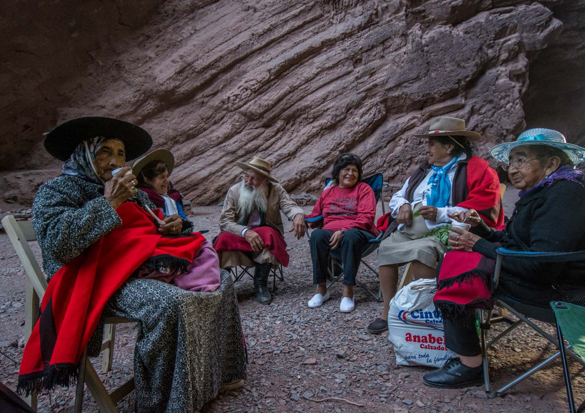
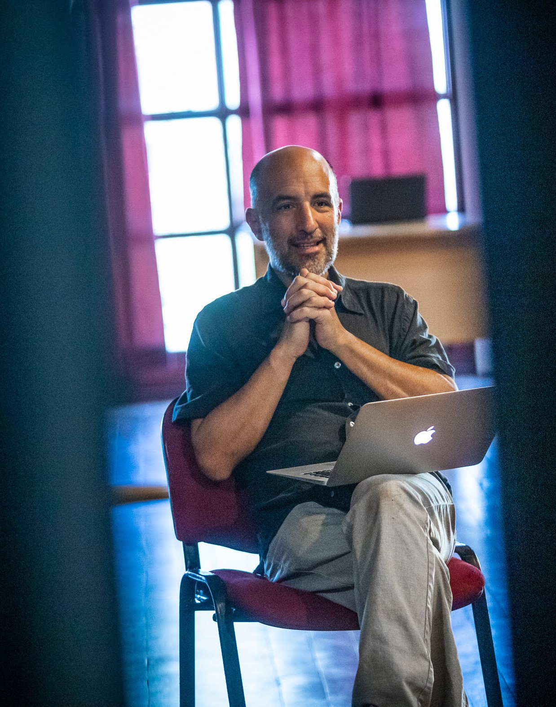

Sound,
space &
perception.
I develop works that explore how sound shapes our experience of space, how listening connects us to a place, and how perception can be transformed.

01—04
Selected works
Four projects, connected by an enquiry into the relationships between sound, matter, bodies and place.

Sonic Crystal Room

Transit

Proyecto GRAPa

Biocenosis
Position & biography
A practice grounded in research. A life working with artists.

Manuel Eguía is an artist and physicist based in Buenos Aires. He holds a PhD in Physics from the Universidad de Buenos Aires (2002), is a CONICET researcher and a full professor at the Escuela Universitaria de Artes, Universidad Nacional de Quilmes. He founded LAPSo, the Laboratory of Acoustics and Sound Perception, in 2007, and founded Proyecto GRAPa in 2017. Since 2026, he directs UNQ’s Instituto de Investigaciones en Arte, Ciencia, Tecnología y Sociedad (ArCiTeS).
My professional foundation is research in physics, nonlinear dynamics, neuroscience and acoustics. For 25 years I have worked at an art school, training artists and forging connections between art and science through laboratory practice and international collaborative projects. From that sustained exchange, I have developed a distinct artistic practice.
I explore emerging questions in sound, acoustics and auditory perception by making works in which those questions become experiences. A room can become an instrument; a familiar interior can unfold into an unfamiliar world; a landscape can be heard through the relationship between a voice and the space that answers it.
My work moves between physical acoustics, immersive sound, virtual reality and collective listening. Scientific models, experiments and technical development are part of how I make art. The encounter with a listener, a body and a particular place gives that work its form.
The laboratory, the classroom, the work
At LAPSo, research and artistic production develop through sustained collaboration. The laboratory brings together acoustic experimentation, sound spatialization, instrument design, auditory perception and virtual environments. It is also a place where artists develop work and researchers learn from artistic questions.
Teaching is integral to this practice. Over 25 years working at an art school, I have trained artists and accompanied projects across music, performance and the visual arts. My work also includes doctoral supervision across science, art and technology, and international workshops that open scientific ideas to people from other disciplines.
Work in progress
Current enquiry: vibrating matter
My recent research into acoustic time reversal extends into studio experiments with pulses travelling through steel sheets. I am exploring how bending a surface changes sound focusing, timbre and radiation, and how these changes can become bodily gestures and spatial listening experiences.
Sharing scientific thought
At the Performing Arts Forum in Saint-Erme, France, I participate in the L.I.F.E. project initiated by Gabriel Catren, bringing scientific enquiry into a setting of artistic and collective experimentation.
- 2022
Deeply Organized Chaos
Workshop leader. Chaos and complexity explored through accessible concepts, fractals, sound experiments and embodied experience. 7–13 July.
- 2023
Hot Identities and Vicious Abstractions
Assisted Gabriel Catren, with Jonathan Lorand, in a workshop on the foundations of mathematics. 21–29 October.
- 2025
The Infinite, the Infinitesimal and the Imaginary
Assisted Gabriel Catren, with Jonathan Lorand and Emily Roff. An exploration of calculus, infinity and mathematical thought. 20–28 October.
Selected international collaborations
Sound design and technological development form another strand of my practice, in dialogue with the authors of these works.
- 2023–2024
Beehive / Colmena
Jorge Macchi
Multichannel sound realization. What the Night Tells the Day, PAC, Milan.
- 2023
Glockenbuch IV (Spectre Maria dei Carmini)
Marcus Schmickler, in collaboration with Julian Rohrhuber
Multichannel sound collaboration. Sound Microscopies programme, Biennale Musica, Venice. Credited by La Biennale.
- 2021
Reliquias
Jorge Caterbetti
Technical collaboration on the installation dedicated to Julio López. Centro Cultural Kirchner, Buenos Aires.
- 2020
La Cathédrale engloutie
Jorge Macchi
Development of the sound installation, with UNQ support. Musée cantonal des Beaux-Arts, Lausanne. 10 September–22 November.
- 2019
Huella Sonora / Alfombra Sonora
Jorge Caterbetti
Technical collaboration on an interactive sound installation within Green Carpet. Centro Cultural de la Ciencia, Buenos Aires.
Selected CV
Artistic practice, scientific research and education are interdependent parts of my trajectory.
Research & teaching
- 2026–
Director, ArCiTeS
Instituto de Investigaciones en Arte, Ciencia, Tecnología y Sociedad, Universidad Nacional de Quilmes.
- 2019–
Full Professor
Escuela Universitaria de Artes, Universidad Nacional de Quilmes.
- 2017
Founder, Proyecto GRAPa
Grupo de Relevamiento Acústico del Patrimonio.
- 2007
Founder, LAPSo
Laboratory of Acoustics and Sound Perception, Universidad Nacional de Quilmes.
CONICET researcher
Physics, nonlinear dynamics, neuroscience and acoustics.
Director of Perspectiva Acústica, Etapa II (2025–2029), a UNQ research programme comprising seven projects.
Education
- 2002
PhD in Physics
Universidad de Buenos Aires.
- 1998
Licenciatura in Physics
Universidad de Buenos Aires.
Exhibitions, residencies & support
- 2024
Sonic Crystal Room
Festival de Nueva Ópera, opening programme, cheLA, Buenos Aires. With Oscar Edelstein.
- 2023
Transit · Artist residency & commission
Northern Sustainable Futures, Moskosel, Sweden. With Mauro Zannoli, for iM Konsthall.
- 2022
Biocenosis · 13th Mercosul Biennial
Porto Alegre, Brazil. Sigismond de Vajay & Kevin Lesquenner + LAPSo.
- 2021
Latin GRAMMY Cultural Foundation Research Grant
With Proyecto GRAPa: recording canto con caja in its original acoustic environments.
- 2019
Sonic Crystal Room · First presentation
Auditorio Nicolás Casullo, Universidad Nacional de Quilmes, Bernal.
- 2011
Lluvia de Arañas sobre el Riachuelo
Collective project with Sigismond de Vajay and Buenos Aires Sonora. Noche de los Museos, Buenos Aires.
Research that informs the practice
From neural communication and nonlinear systems to acoustic materials and virtual listening environments, these publications trace the scientific questions that feed my artistic work.
- 2026Perception in virtual environments
- 2026Nonlinear dynamics as a sound material
- 2022Acoustic materials and musical performance
- 2019Chaos and acoustic focusing
- 2015Sonic crystals and perceived distance
- 2000Neuroscience and information